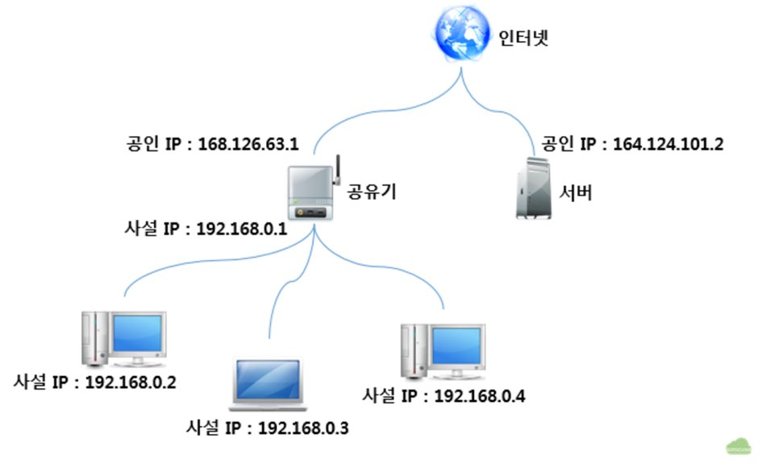
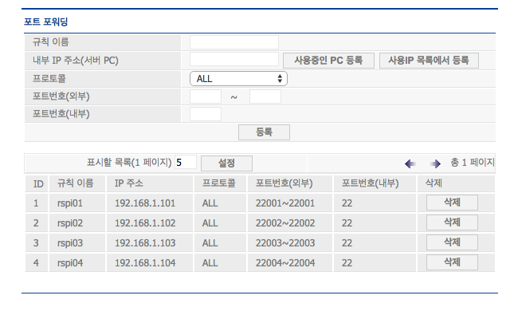
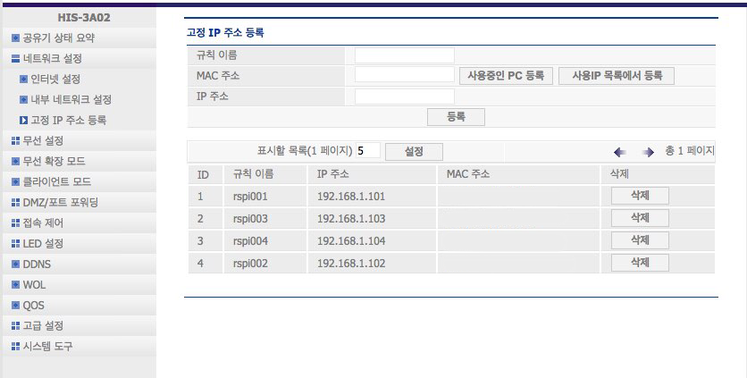

$100 달러 오픈 슈퍼 컴퓨터
네트워크 관계없이 외부에서 라즈베리파이 접속하기
외부에서 라즈베리파이 클러스터로 접속하기 위한 외부접속 IP 설정은 다음과 같다.
1. 내부 ip 포트포워딩을 통한 개방
- 라우터(공유기) ip 의 개념

- 공인 ip : 일반적인 ip를 의미하며 인터넷 사용자의 고유 식별 도구로 볼 수 있다.
- 내부 ip(사설 ip) : 공인 ip를 통해 개별적 사용자를 식별하지만, 공유기의 경우 연결된 모든 기기들에 공인 ip를 부여하지 - 않는다. 공유기 자체가 공인 ip를 가지고, 개별적 기기가 공유기에 연결될 때 마다 임의의 서설 ip를 부여하게 된다.
- 차이 : 공인 ip의 경우 외부에서 조회가 가능하지만, 사설 ip만 가지고는 그 ip가 누구를 지칭하는지 알 수 없다.
- 따라서 외부에서도 해당 공유기의 사설 ip들을 조회 할 수 있도록 하는 포트포워딩 설정이 필요한 것이다.
- 포트포워딩 설정방법

- 공유기 제조사 별로 공유기 설정변경 페이지에 접속한다.
- ’포트포워딩’설정에서 연결하고자 하는 기기의 내부 ip를 조회한다.
- 내부포트(
ssh를 통해 접속할 것이므로ssh포트인 22를 입력)를 입력하고 외부포트에는 해당 기기를 외부에서 접속할떄 사용할 쉬운 약속어를 정해준다.(ex 22001, 22002, 22003 …)
2. 고정 ip 등록

- 공유기가 재부팅되거나, 공유기의 위치를 이동시킬때마다 공유기에 연결된 기기들의 사설 ip는 랜덤으로 재배정된다. 이 불편함을 없애고자 처음 각각의 라즈베리파이를 라즈베리파이에 연결시킬때 사설 ip를 사용자의 편의에 맞게 고정시킬 수 있다.
- 한번 고정된 내부 ip는 언제든지 정해진 ip를 가지므로 관리및 기억이 용이해진다.
- 예를 들어, 첫번째 라즈베리파이는
192.168.1.101, n번째 라즈베리파이는192.168.1.10n으로 지정해 놓을 수 있다.
3. Weaved 프로그램
각각의 라즈베리파이에 위브드(Weaved) 프로그램을 설치함으로써 http://weaved.com/ 을 통해 언제 어디서든지 개인의 라즈베리파이에 원격 ssh 접속할 수 있다.

설정방법
- http://weaved.com/ 서비스에 회원가입한다.
- 동일 네트워크망에서
ssh로 라즈베리파이에 접속한다. - 라즈베리파이에 Weaved 프로그램을 설치한다. 라즈베리파이를 위브드 설치문서 참고
$ sudo apt-get update
$ sudo apt-get install weavedconnectd
$ sudo weavedinstaller- 팝업되는 메뉴얼에 따라서 설치한다.
$ exit로 원격접속을 빠져나온다.
접속방법
- http://weaved.com/ 에 로그인해서 ‘For pi username’ 부분을 복사해서 명령어창에 실행한다.
- 비밀번호를 입력하여 접속한다.